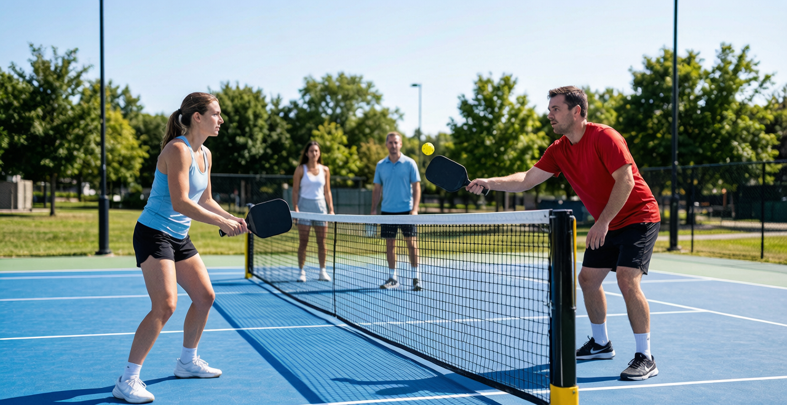

How to play pickleball: a beginner guide for the US

You have probably seen the courts pop up in a park near you, or a friend has dragged you to "open play" and handed you a paddle. Pickleball looks confusing from the sidelines, but the truth is most people are rallying within their first ten minutes. This guide walks through what the game is, the rules that actually matter, and where to find a court on either side of the border.
A quick note on who this is for: if you have never held a paddle, you are in the right place. I am not going to lecture you on spin mechanics. We will cover just enough to step on the court without embarrassing yourself, and no more.
What exactly is pickleball?
Pickleball is a racket sport played with a solid paddle and a perforated plastic ball (think a wiffle ball, but built for the game). It borrows bits from three older sports: the court dimensions come from badminton, the net from tennis, and the rally feel from table tennis. You can play singles, but doubles is the default almost everywhere because it is more social and a little easier on the legs.
The reason it spread so fast is simple. The court is small, the ball moves slowly, and you do not need a powerful swing to keep a rally going. A 70-year-old and a 12-year-old can share a court and both have a good time, which is rare for a competitive sport.
Why everyone seems to be playing right now
In the United States, pickleball has been the country's fastest-growing sport for several years running. USA Pickleball estimates more than 48 million Americans picked up a paddle in 2024. When a sport grows this quickly, the awkward part is just getting started before the crowd gets good.
A short, slightly disputed backstory
The game was invented in 1965 on Bainbridge Island, Washington, by three friends (Joel Pritchard, Bill Bell, and Barney McCallum) who wanted to entertain their kids. The "pickleball" name has two competing origin stories: one says it came from a family dog named Pickles, the other from the term "pickle boat" in crew racing, for a mixed-bag crew. Both are fun. Neither will help your backhand.
What you need to start
Less than you think. Here is the real list:
- A paddle. Any beginner paddle works for your first session. Most rec centers lend them out, so you can try before you buy.
- Balls. Outdoor balls have fewer, larger holes and are heavier so the wind does not carry them. Indoor balls are softer with smaller holes. If you play outside, ask for outdoor balls. The difference is bigger than it looks, and our indoor vs outdoor balls guide explains which to grab.
- Shoes with lateral support. Do not wear running shoes. Running shoes are built for forward motion and will betray you the first time you shuffle sideways. Court shoes (pickleball, tennis, or indoor volleyball) are the safe choice.
- A court with a net. Many public parks now have one. If you are playing at home, portable nets exist, but most beginners start at a local facility.
You do not need special clothes, gloves, or a membership to try it once.
The court, in plain terms
The playing surface is 20 feet wide and 44 feet long, the same footprint as a badminton doubles court. The net sits 36 inches high at the posts and dips to 34 inches in the middle. The one feature that confuses newcomers is the kitchen, also called the non-volley zone: a 7-foot strip on either side of the net. You can stand there, but you cannot hit the ball out of the air while you are in it. More on that below, because it is the rule people break by accident.
The rules that actually matter
There are only a handful you need before your first game.
The serve
The serve must be underhand, with the paddle making contact below your waist, and it has to travel diagonally into the correct service box on the other side. No overhand tosses, no aiming straight ahead. In casual play, most people just want the serve to land in. Do not overthink the spin yet.
The two-bounce rule
This is the one that trips people up. After the serve, the receiving team must let the ball bounce once before they hit it. Then, when the serving team hits it back, they also must let it bounce once. After those two bounces, either side can volley the ball (hit it out of the air). The rule exists to slow the start of each point down so nobody gets blasted before they are ready. Once it clicks, you stop thinking about it.
The kitchen, properly explained
The non-volley zone is the 7-foot area on each side of the net. You cannot volley while standing in it, and you cannot let your momentum carry you into it right after a volley either. The easy way to remember: if the ball is going to bounce in the kitchen, let it bounce, then step in to hit it. Only the volley is restricted, not the whole zone. Most "kitchen faults" happen because someone reaches in for a tempting ball and plants a foot.
Scoring
Games are usually played to 11 points, and you have to win by 2. Only the serving team can score. In doubles, the score is called as three numbers: the server's score, the receiver's score, and which server you are (one or two). You will hear people shout things like "four, two, one" before they serve. It sounds odd until you have done it twice. When those three numbers still confuse you, our scoring explainer walks through the whole call.
How a point actually unfolds
Picture a doubles point. One server hits an underhand serve diagonally across. The receiving team lets it bounce, returns it, and the serving team lets that bounce too. Now both sides are at the net, trading softer shots, working to set up one they can put away. That is the entire shape of the game. The team that serves is briefly on defense, which is why getting to the net matters so much.
Where to play in the US
You have more options than you think:
- Public parks and rec centers. USA Pickleball's Places to Play directory lists tens of thousands of locations across the US. Many are free or cost a few dollars for open play.
- Converted tennis courts. A lot of cities painted pickleball lines onto existing tennis courts. They play fine, though the layout is tighter than a dedicated court.
- Dedicated pickleball clubs. These have exploded in the last two years. Membership varies, but most run beginner nights.
The quickest path is to search "[your city] pickleball open play" and show up. Open play is designed for exactly this: mixed skill levels, rotating partners, nobody judging your first session.
A few things nobody tells beginners
- Call lines honestly. If a ball lands on the line, it is in. If you cannot tell, give it to your opponent. The culture rewards honesty over winning a recreational point.
- Announce the score before you serve. It keeps everyone oriented and stops half the arguments before they start.
- A paddle tap at the net ends the game. It is the handshake of pickleball. Do it even if you lost, especially if you lost.
- You will be bad at first, and that is fine. The people destroying you at open play were bad too, about six months ago.
- Free coaching is everywhere. Channels like PrimeTime Pickleball, Pickleball Kitchen, and Selkirk TV post full beginner breakdowns for free. Watch one on the bus and you will look months ahead by your second session.
Your next step
Learn the rules, then get a paddle that fits you. You do not need a pro-level stick to start, and buying the wrong one can actually make the game harder. Our matcher scores 20-plus paddles against your level, style, and budget in about 30 seconds, or you can read the full guide to choosing your first paddle first.
If you would rather understand the gear before you pick, start with how to choose your first pickleball paddle. And once you are on the court, our beginner mistakes guide will save you a few weeks of bad habits.
getrallypick may earn a commission from partner links. It never changes our recommendations. See our disclosure.